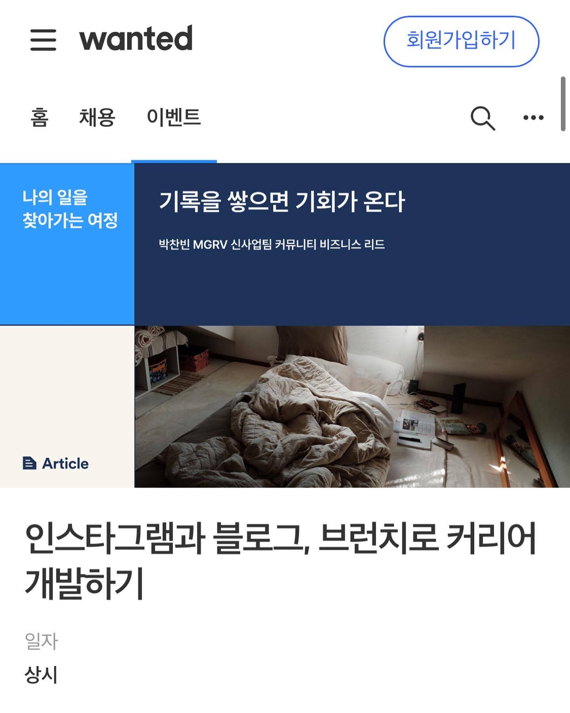
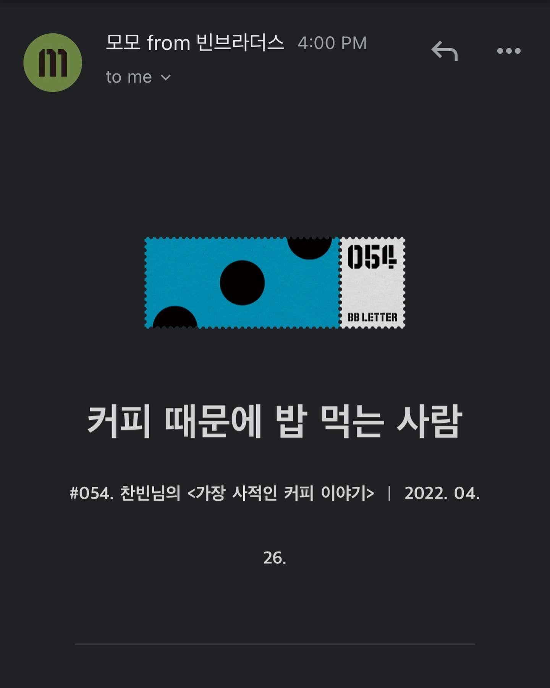
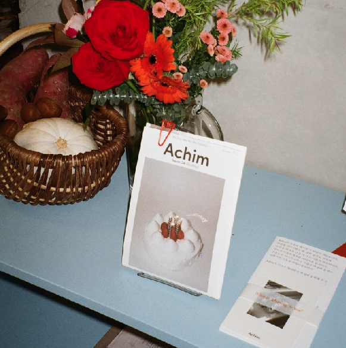
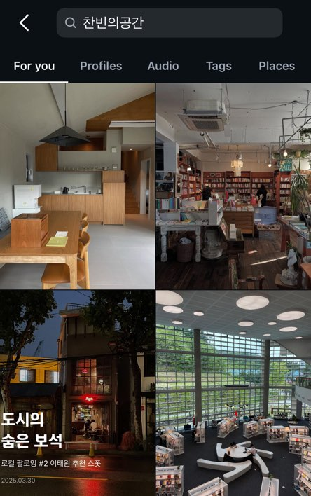
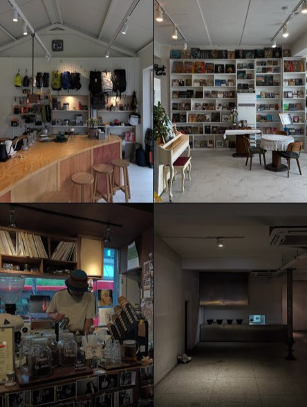
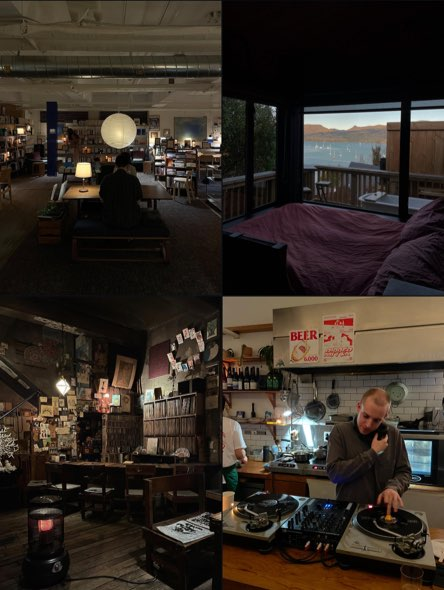

저는 지난 10년 동안, 사람들이 머무를 이유를 만들어온 박찬빈입니다. Airbnb에서 호스트를 발굴하고, WeWork와 MGRV에서 코리빙·코워킹 커뮤니티를 운영했습니다. 워케이션 프로그램을 기획했고, 섬세이에서는 전사 운영을 맡아 사업 전반을 이끌었습니다. 직함은 여러 번 바뀌었지만, 제가 해온 일의 본질은 늘 같았습니다. 브랜드와 사람 사이, 그리고 사람과 사람 사이를 연결하는 일.
그 과정에서 저는, 일을 통해 사람과 사람이 연결되고 그 관계가 이어지며 새로운 가치가 만들어지는 순간들을 가까이에서 지켜봐 왔습니다. 사람과 공간이 만나면 무언가가 시작된다는 것. 그 사실 하나로 저는 10년을 일해왔습니다.
이제 그 시간을 발판 삼아, 독립을 시작하려 합니다. 앞으로 제가 풀고 싶은 질문은 단순합니다. 우리는 왜 점점 더 집중하지 못하게 되었을까. 알림은 끊이지 않고, 플랫폼은 주의를 나눠 갖고, 멀티태스킹이 능력처럼 여겨지는 시대. 그 안에서 오히려 아무것도 하지 않는 시간, 따분함을 견디는 힘이 점점 더 중요한 가치가 되고 있다고 생각합니다.
저는 앞으로의 10년을 '집중력을 회복하는 기간'으로 보고 있습니다. 이 주제를 중심으로 커뮤니티와 공간, 그리고 프로덕트(앱과 물리적 제품)를 만들어가고 싶습니다. 그게 제가 저를 다 쓰다 가는 인생의 방식이라고 믿습니다.
직장인으로 10년을 보내는 동안에도, 사이드는 늘 제 안에 있었습니다. 독립출판 〈찬빈네집〉을 만들고, 이태원에서 스페셜티 커피 Airbnb Experience를 운영했습니다. LEGO® SERIOUS PLAY® 퍼실리테이터 자격을 취득했고, 밑미에서는 리추얼 메이커로 활동했으며, 트레바리에서는 클럽장으로 독서 모임을 이끌었습니다. 그것들은 언제나 '직업 옆의 무언가'였습니다. 하지만 돌아보면, 그 작은 시도들이 쌓여 지금의 저를 만들었습니다.
SIDE Collective가 인상 깊었던 이유도 여기에 있습니다. 사이드를 단순한 취미로 두지 않고, 그것으로 무엇을 만들어낼 수 있는지 함께 탐색하는 구조를 가지고 있다는 점. 저는 지금 그 탐색을 막 시작한 사람이면서, 동시에 지난 10년 동안 다른 사람들의 탐색을 설계해온 사람이기도 합니다. 커뮤니티 기획자로서, 운영 총괄로서, '누군가의 가능성이 현실이 되는 구조'를 만드는 일을 계속해왔습니다. 그래서 사이드 콜렉티브는 낯설기보다, 오히려 자연스럽고 매력적으로 이어지는 다음 단계처럼 느껴집니다.
크루로 함께하게 된다면, 저처럼 사이드를 품고 살아온 다능인들이 그것을 더 깊이 탐구하고, 결국 자신만의 비즈니스로 이어갈 수 있도록 돕고 싶습니다. 그동안 저는 사람들이 왜 모이고, 어떤 관계가 오래 지속되는지를 계속 관찰해왔습니다. 그 경험이 SIDE 안에서 누군가에게 작은 힌트라도 된다면, 그걸로 충분합니다.
동시에, 코치이자 작가로서의 페르소나를 더 분명히 만들고 싶습니다. 빠르게 몰아붙이기보다, 그렇다고 멈추지도 않게. 각자의 속도를 지키면서 나아갈 수 있도록 옆에서 페이스를 맞추는 사람. 그 역할을 사이드 콜렉티브 크루 분들과 해보고 싶습니다.

원티드플러스
빈브라더스
아침 (Achim)

